18 billion pounds of plastic trash winds up in our oceans each year
What're you doing?
The Ocean Status is an informative website that keeps the audience informed on the resources there are to learn more about how to care for the ocean, how you can take action to help clean up the ocean, renowned organizations dedicated to keeping pollution out of our waters, and technology from small to big scale that are cleaning oceans and removing plastics and oil. We also provide information on politicians in the United States who are dedicated to making climate change and the oceans a priority in their administration.
OUR MISSION
Our mission is to raise awareness and provide knowledge and research on the status of the ocean for internet users and those who are looking for a way to help. We also aim to have this website reach those who are not as informed and hope it opens eyes just a little, proving we need the help of everyone to save the ocean and the sea life it houses.
THE GOAL
The goal is to increase care for our oceans every day and to bring awareness and knowledge of what each person can do to help keep our oceans clean. The overall goal is to save the oceans and sealife and keep it pollution free.
BOOKS
PLASTIC SOUP
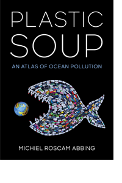 “Plastics have transformed every aspect of our lives. Yet the very properties that make them attractive--they are cheap to make, light, and durable--spell disaster when trash makes its way into the environment. Plastic Soup: An Atlas of Ocean Pollution is a beautifully-illustrated survey of the plastics clogging our seas, their impacts on wildlife and people around the world, and inspirational initiatives designed to tackle the problem.”
PLASTIC OCEAN
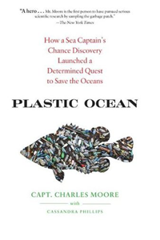 “Plastics have transformed every aspect of our lives. Yet the very properties that make them attractive--they are cheap to make, light, and durable--spell disaster when trash makes its way into the environment. Plastic Soup: An Atlas of Ocean Pollution is a beautifully-illustrated survey of the plastics clogging our seas, their impacts on wildlife and people around the world, and inspirational initiatives designed to tackle the problem.”
THE OCEAN BOOK
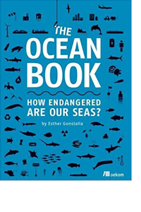 "The Ocean Book is full of easy-to-read, beautiful infographics that present the key issues facing our oceans. Rising sea levels, growing rubbish patches and overfishing are putting our oceans in grave danger. Though we love our oceans, we must learn to cherish them. This book will help readers realize how we cause the problems and how we can solve them.
TRASH VORTEX
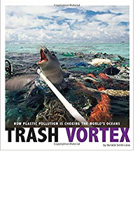 “Millions of tons of plastic slip into oceans every year. Some floats and travels slowly with the currents, endangering the health of marine animals. The rest is hardly visible but is far more dangerous. Tiny bits of plastic sprinkle the ocean's surface or mix into the sandy seafloor and beaches. It ends up inside birds, fish, and other animals, harming them-and ultimately humans. Experts struggle with fear and hope as they work to stop the flood of plastic threatening living organisms across the globe.”
FILMS
A PLASTIC OCEAN
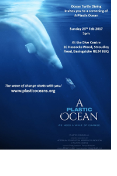 “This film’s producer joins an expedition to the Great Pacific Garbage Patch to investigate the extent of plastic pollution. The filmmakers brought in scientists and researchers to help tell the story and lay out the facts. If you want to see the impact of our plastic consumption, this documentary is sure to inspire. ”
CHASING CORAL
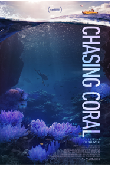 “Coral reefs are vanishing at an astonishing rate. Corals teem with life, but it is easy as land-dwelling creatures to forget about the magnificence of the underwater environment. This documentary shows how corals are dying and will hopefully rouse people to action. It is action-packed and visually stunning.”
THE BLUE PLANET
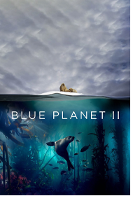 "The Blue Planet is a captivating series that dives under the ocean’s surface to examine its watery depths. The more we know and appreciate the ocean, the more likely we are to take steps to protect her. The ocean is how to a fascinating array of creatures that are sure to stretch your imagination.""
MISSION BLUE
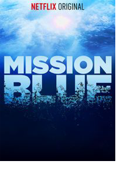 “Oceanographer Sylvia Earle is campaigning to save the oceans. This film is about her life and work. It focuses on her mission to protect marine areas like underwater national parks. Get ready for a wake-up call. So, grab your popcorn and your best snuggle buddy and enjoy some compelling films. Don’t be surprised if you are anxious to take action even as the closing credits roll. Our oceans need our help.”
Oceana seeks to make our oceans more biodiverse and abundant by winning policy victories in the countries that govern much of the world's marine life. Oceana, founded in 2001, is the largest international advocacy organization focused solely on ocean conservation. Our offices around the world work together to win strategic, directed campaigns that achieve measurable outcomes that will help make our oceans more bio diverse and abundant.
The Ocean Cleanup is developing a passive cleanup method, which uses the natural oceanic forces to rapidly and cost-effectively clean up the plastic already in the oceans. With a full fleet of cleanup systems in the Great Pacific Garbage Patch, they aim to clean up 50 % of its plastic every five years.
Today, Ocean Conservancy works with millions of volunteers of all ages, from all around the world, on our International Coastal Cleanup—something we’ve been doing for more than 30 years. Their leadership in the world of ocean conservation is built on pillars of strong science, smart policies and engaged partners. That helps push for effective ocean policies, international groups that work with us to reduce plastics in the ocean and over 600,000 volunteers who are part of the International Coastal Cleanup.
The 5 Gyres Institute is a 5013 non-profit organization that focuses on reducing plastics pollution by focusing on primary research. Programs concentrate on science, education and adventure. Since 2017, 5 Gyres has been in special consultative status with the United Nations Economic and Social Council.
THE INTERCEPTOR
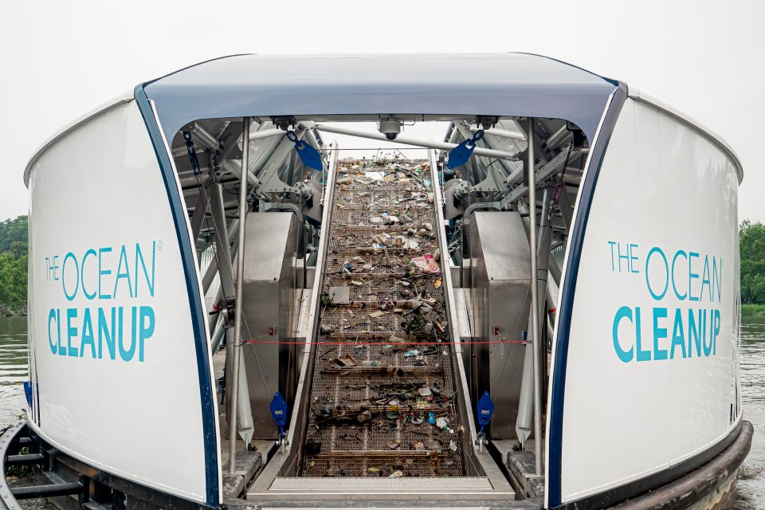 The Interceptor is The Ocean Cleanup’s answer for river plastic waste. It is the first scalable solution to prevent plastic from entering the world’s oceans from rivers. It is 100% solar-powered, extracts plastic autonomously, and is capable of operating in the majority of the world’s most polluting rivers. The Interceptor can extract 50,000 kilograms of plastic per day. In optimal conditions, up to double this amount can be achieved. It can also work autonomously until it’s full and can continue extracting debris even when the dumpsters are being emptied. Additionally, its large storage capacity allows for efficient emptying cycles, filling entire garbage trucks at once.
THE SEABIN
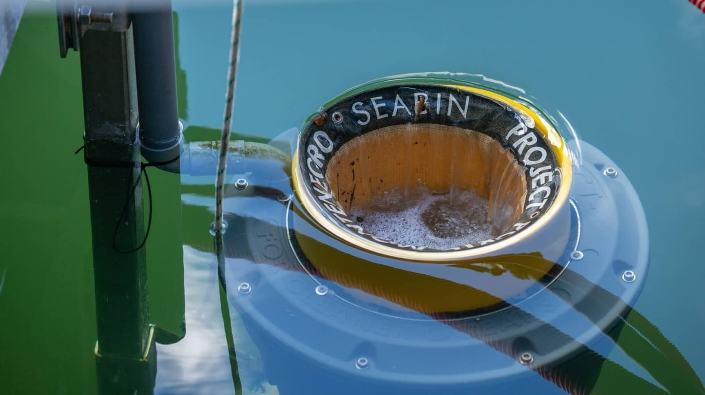 The SeaBin, created by two Australian surfers, is a bucket with a pump and water filtration system that is designed to suck debris from any marina or dock. The bucket includes an optional oil-water separator system that will pull oil right out of the ocean, then spit out cleaner water through the other side of the pump.
HYDROTHERMAL PROCESSING
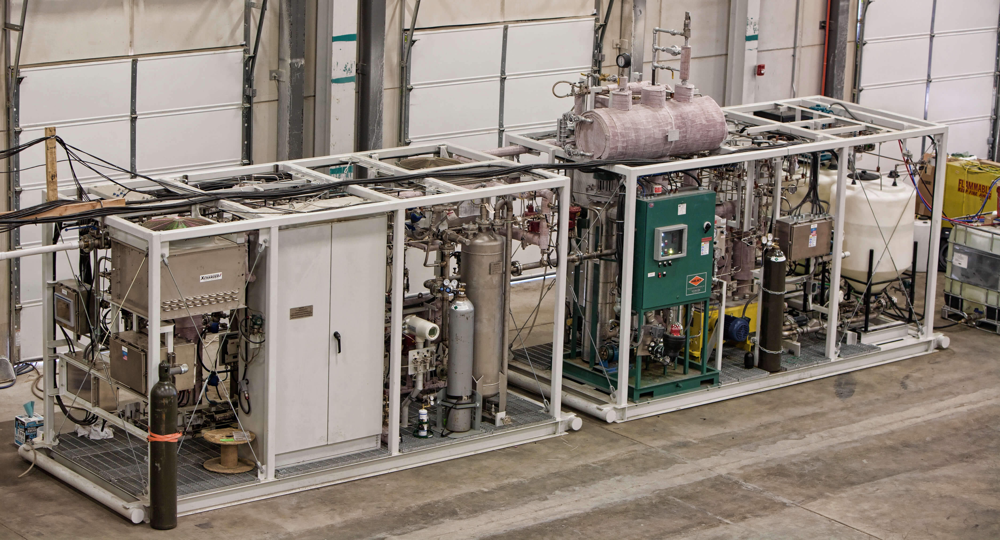 The Purdue team use a technique called hydrothermal processing. What the team does is place the poplypropylene in a reactor filled with water, and heat it up to temperatures ranging from 380–500°C for up to five hours at a pressure of 23 Megapascals. At the high heat and pressure, water breaks down the plastic and converts it into oil. The researchers were able to transform 91% of the plastic into oil. The oil, which is a mix of different hydrocarbon compounds, can be used to make buildings blocks for gasoline and other fuels and chemicals.